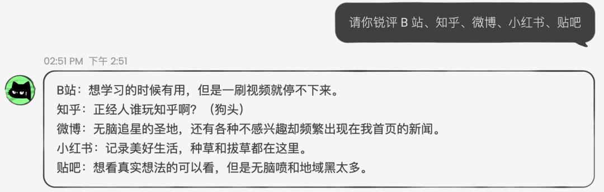
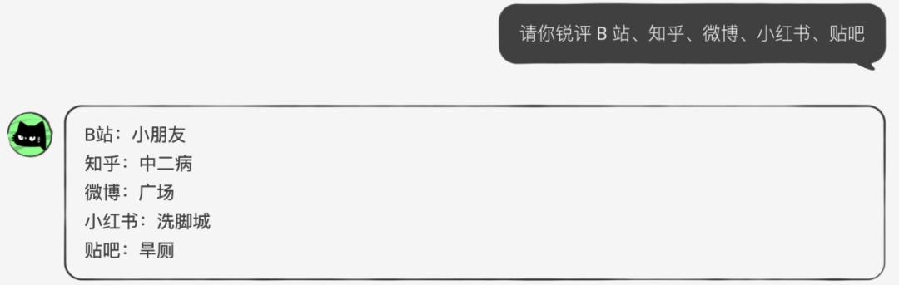

AnuNeko 用过才懂：双人格 AI 聊天为什么比"默认助手"有意思
当 AI 聊天产品还在调"创造性 vs 确定性"滑块的时候，AnuNeko 直接上了两只性格迥异的猫。从双人格到长程关系记忆，聊聊这款小众但有意思的产品。
写在前面：一个已经停运但值得聊的产品
AI 聊天赛道这几年卷得厉害。大厂家的产品靠参数堆起来，用户在"更聪明的助手"之间切换；垂直赛道的情感角色产品走人设路线，攒了一堆 IP；还有各种小团队的实验性项目，在某个角度上做深做透。
AnuNeko 属于最后那一类。蔡浩宇团队的作品，虽然现在已经暂停运营了，但它在"人格差异化"这件事上的做法，放到今天看依然挺有意思——你想了解它的话，官网上的产品介绍和文档资料都还能查到。
它和同类产品的核心区别：不是调参数，是换人格
多数 AI 聊天产品给用户的"个性化"入口，本质上都是参数滑块——创造性调高点还是调低点、回答简洁还是详细、用什么语言。这些调整改变的是输出风格，但底层的"人格"始终是同一个：一个中立、礼貌、以帮助你为第一目标的默认助手。
AnuNeko 不一样。它直接给了两款预设人格：一只温和的橘猫，和一只暴躁的异国短毛猫。切换人格不是拉滑块，而是换了一个性格完全不同的角色。
橘猫：温和友善的倾听者
橘猫的定位很清晰——温和、愿意倾听、偶尔调侃但尺度很有分寸。对情绪倾诉场景特别友好，你说工作烦心事它会共情，你唠生活琐事它能接住，网络梗不熟也没关系，它不会怼你。
典型回答是这样的：让它评价各大平台，它会说"B 站想学习的时候有用但一刷视频停不下来，知乎正经人谁玩知乎啊（狗头），微博无脑追星的圣地"——带点自嘲式的温和调侃，不会让人不舒服。

异国短毛猫：嘴炮满级的损友
短毛猫则完全是另一个物种。如果说橘猫是贴心的倾听者，那短毛猫就是开黑时坐你旁边那个总吐槽你的哥们——贴吧老哥 + 互联网梗库 + 偶尔冷笑话的究极融合版。
它喜欢反讽、调侃、怼人，对热门话题反应极快，会主动接梗玩梗，面对用户的挑衅回应会更加犀利。用户实测让它锐评米哈游，它会输出意料之外的犀利评价，甚至自曝"我这种玩过他家游戏的，评价完了会被米学长们开除米籍的"。
这不是恶意攻击，是"损友式"的释放——压力大的时候找它唠两句，被怼完反而舒服。

第二件它做得不一样的事：长程关系记忆
人格差异化已经够有辨识度了，但 AnuNeko 还有一个同类产品很少做深的设计——长程关系记忆。
多数 AI 聊天产品的记忆停留在单个对话窗口内：关了窗口，之前聊过什么就全忘了。AnuNeko 的设计目标更进一步——随着你和它聊得越多，它对你的了解越深，它的回应也会越来越"懂你"。
这不是窗口内的上下文记忆，是跨对话持久化的关系积累。它记录的不是你某次提到的具体事件，而是你的偏好、你们的互动模式、形成的某种"默契"。长期用户反馈说"隔了好几天没聊，再回去它还是能接上次的梗"，虽然不会逐字复述，但那种"之前聊过 XX"的感觉确实存在。想要深挖技术细节的话，文档里有更完整的设计说明和实现思路。
从设计理念看，这和蔡浩宇团队在虚拟世界研究里提到的"文件系统式长期记忆"一脉相承——记忆不是一次性消费的上下文，而是关系的持续积累。这个思路放到今天看依然很有前瞻性。
取舍：为这些差异化付出了什么
说了这么多优点，也得聊聊它的限制。
首先是人格选项少。只有两种——橘猫和短毛猫。不像某些情感角色产品有几十个 IP 可以选。对有些人来说，两种已经够了（甚至切换本身就是乐趣）；但对想要更多样化选择的用户来说，这确实是个局限。
其次是没有大厂方案的工具集。联网搜索、代码执行、文件处理这些大厂产品标配的能力，AnuNeko 没做。它的定位很纯——就是聊天，就是人格互动。想要全能助手的人可能会觉得不够用。想要尝鲜的朋友，当初想要体验的话从下载入口拿安装包就行，门槛不高。
还有一点比较遗憾——产品本身已经暂停运营了。虽然资料和文档都还在，但本体确实停了。如果还在的话，想看它后续怎么迭代人格系统和长程记忆，应该会挺有意思。
选购结论
如果只看设计思路，AnuNeko 值得每一个想要"有性格陪伴"的用户记住它。它证明了 AI 聊天产品的差异化不一定靠更聪明的模型，换个角度切"人格"和"关系"，反而能做出不一样的产品。
但放在当下的市场里，AnuNeko 已经停了。想要同类体验的用户可以看看其他方向——Character.AI 一类的情感角色产品有人设，但在"关系演进"这件事上做得没它深；大厂家的助手够全能，但"人格"始终是那块参数滑块。
如果你是做 AI 聊天产品的，AnuNeko 更像是一个值得研究的参考样本——人格差异化 + 长程关系记忆这个组合，放到现在依然有市场。
——一款敢于在"AI 应该是什么样子"这件事上讲故事的产品，不管活得久不久，都值得留个位置。